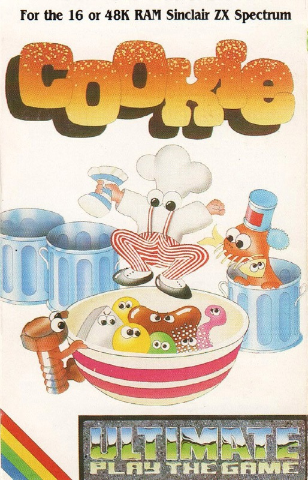
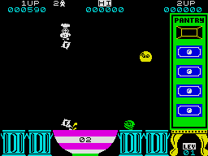

Cookie

{kind=link}

| Publisher: | Ultimate Play the Game |
| Price: | £5.50 / £14.95 |
| Year: | 1983 |
| Source: | CRASH, Issue 8 |
Cookie was one of the few games released too early to receive a review in CRASH, all that was published was this short snippet in issue 8, included in a section titled 'Crash back'.

Cookie, along with Tranz-Am, was the second batch of releases from Ultimate. Of the two, perhaps Tranz-Am was the more popular, possibly be cause in some respects Cookie resembled PSSST, and oddly PSSST wasn't quite as popular as Jetpac had been.
This game was never really heavily pushed. Why? I don't know, because I think it's a great game and probably the most difficult to master out of the entire Ultimate range. The graphics are well up to today's standard and the game is very playable still, although some of its original addictive qualities are let down due to its dramatic increase in difficulty with each stage. Nevertheless, I would recommend this game highly. Good value and plenty of unique touches. MU